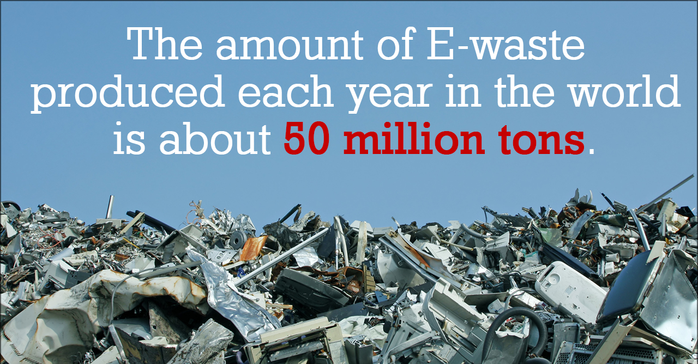

Waste
The Problem
WE MAKE a LOT of WASTE
We are producing gigantic amounts of waste. Total waste in the world is enormous.
2.12 Billion Tons of waste globally each year
Some of it is recycled but a lot is simply dumped, causing problems for people and the environment.
